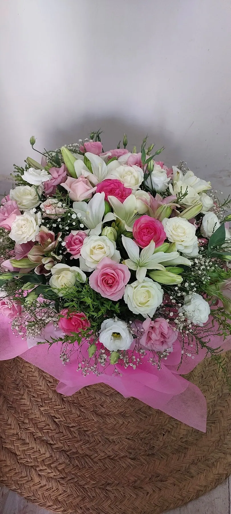
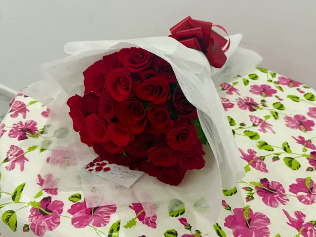
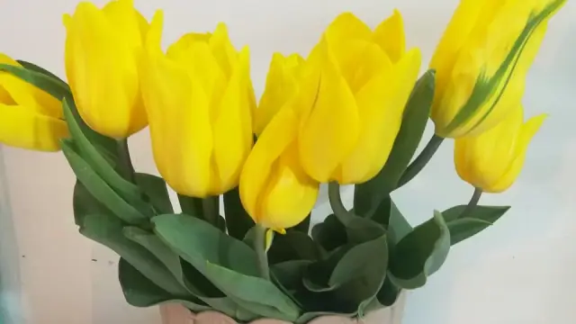
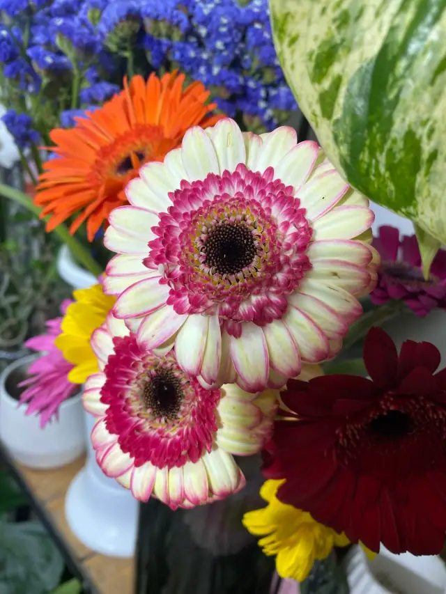
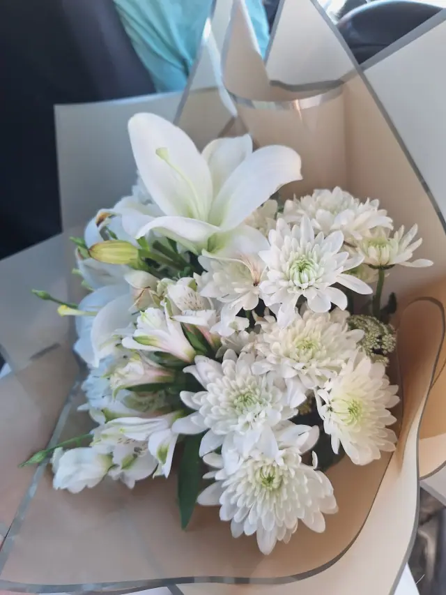
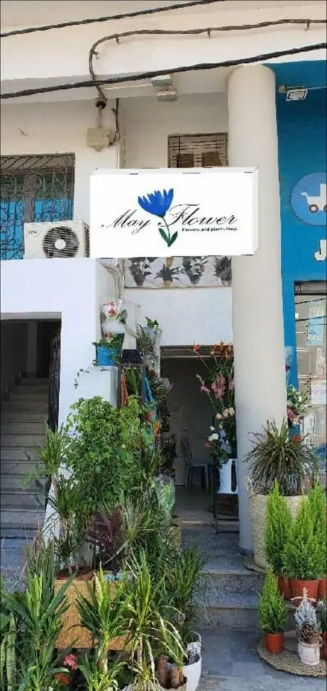
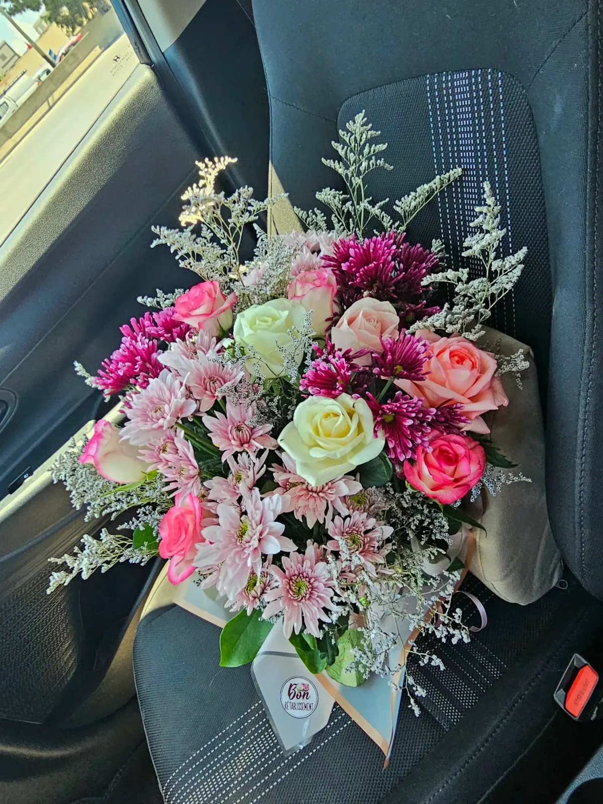

Fleuriste May Flower Aïn Zaghouan, Tunis L’art floral, tout près de chez vous.
Bouquets frais, compositions florales et plantes, préparés à la main dans notre boutique de l’avenue Khaled Ibn Walid. Pour offrir, fêter ou simplement fleurir votre intérieur — avec livraison.
4,9/5 · 77 avis Google




- Bouquets de fleurs
- Compositions florales
- Décoration florale de mariage
- Plantes d’intérieur & d’extérieur
- Livraison

01 Notre univers
Une boutique de fleurs et de plantes, pensée comme un petit jardin.
À Aïn Zaghouan, l’enseigne à la tulipe bleue annonce la couleur : flowers and plants shop. Sur le pas de la porte, les plantes vertes débordent sur le trottoir ; à l’intérieur, les seaux de roses, de gerberas et de lys attendent d’être assemblés.
Chaque bouquet se compose à la main, au comptoir, à partir des fleurs du jour et de ce que vous souhaitez exprimer — un merci, un anniversaire, un prompt rétablissement, ou l’envie de fleurir la maison.
« On voit la passion à travers ses bouquets. »
Faten S. — avis Google
Ce que nous faisons
- Vente et livraison de bouquets de fleurs
- Compositions florales
- Décoration florale de voiture de mariage
- Décoration florale de salles des fêtes
- Plantes d’intérieur et d’extérieur
- Bacs et pots de fleurs
02 Nos créations
Cinq façons de dire les choses avec des fleurs.
Une sélection de bouquets et de compositions réalisés en boutique. Chaque création est unique : les fleurs varient selon les arrivages et vos envies.
03 Galerie
Le carnet de l’atelier.
Photographies réelles de nos bouquets et de la boutique. Touchez une image pour l’agrandir.

04 Livraison
Offrir des fleurs, même à distance.
May Flower livre ses bouquets et compositions. Pour connaître les zones desservies, les délais et les frais de livraison, le plus simple est d’écrire ou d’appeler directement la boutique : vous obtenez une réponse précise, adaptée à votre demande.
- 1Contactez-nous par WhatsApp ou par téléphone.
- 2Précisez l’occasion, les couleurs, votre budget et l’adresse.
- 3Nous convenons ensemble des modalités de livraison.
« Ses conseils sont très pertinents et il sait exactement ce que j’avais en tête en termes de bouquets. »
Salem B. — avis Google
« Très belles fleurs, fraîches et bien arrangées. Ce n’est pas la première fois que j’achète ici et je suis toujours satisfaite. »
Nour B. — avis Google
« Une dame gentille qui s’occupe de tous ses clients avec le sourire. »
Faten S. — avis Google
Extraits fidèles d’avis publics publiés sur la fiche Google Maps de l’établissement. Note et nombre d’avis relevés sur Google.
06 Contact
Passez nous voir, ou appelez-nous.
- Adresse
- 77 avenue Khaled Ibn Walid
Aïn Zaghouan, 2049 Tunis
Plus code : V75C+MCF - Téléphone
- +216 22 727 629
- maymyflower2020@gmail.com
- Réseaux
- Facebook — May Flower
Horaires
| Lundi | 7h30 – 21h00 |
|---|---|
| Mardi | 7h30 – 21h00 |
| Mercredi | 7h30 – 21h00 |
| Jeudi | 7h30 – 21h00 |
| Vendredi | 7h30 – 21h00 |
| Samedi | 7h30 – 21h00 |
| Dimanche | 7h30 – 21h00 |
Horaires indiqués sur la fiche Google Maps. Jours fériés : appelez avant de vous déplacer.